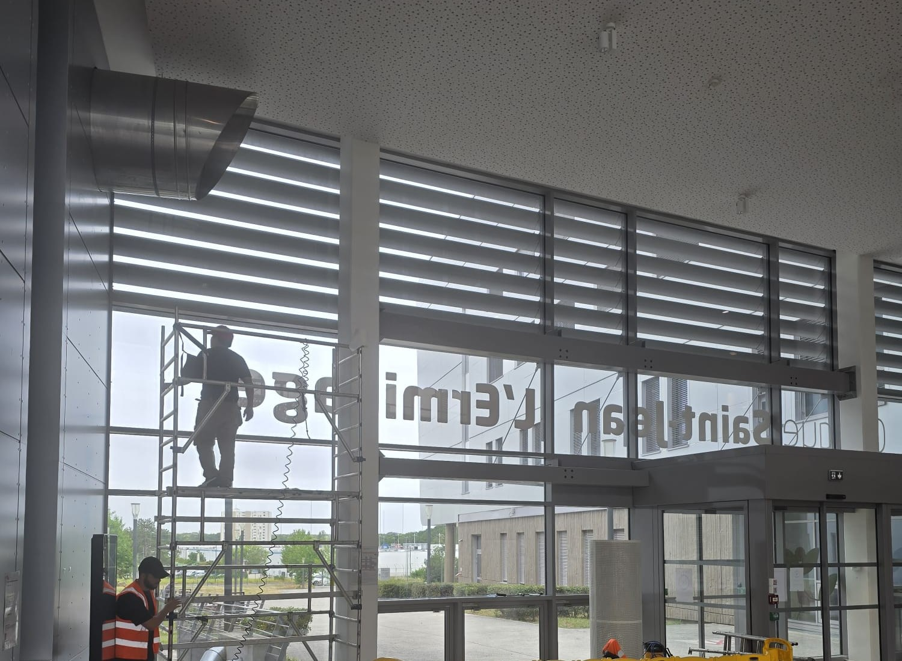
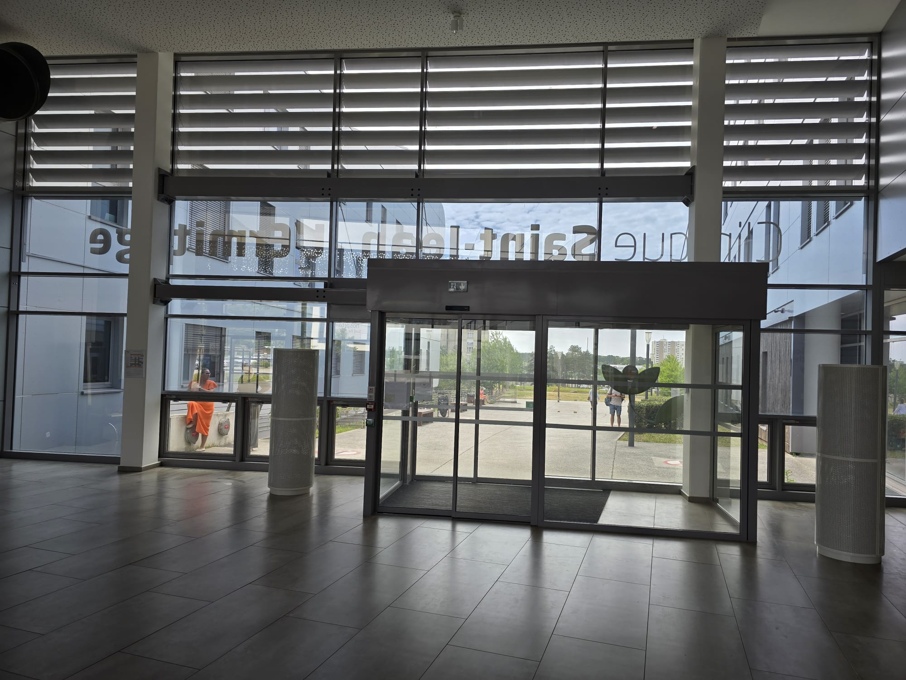
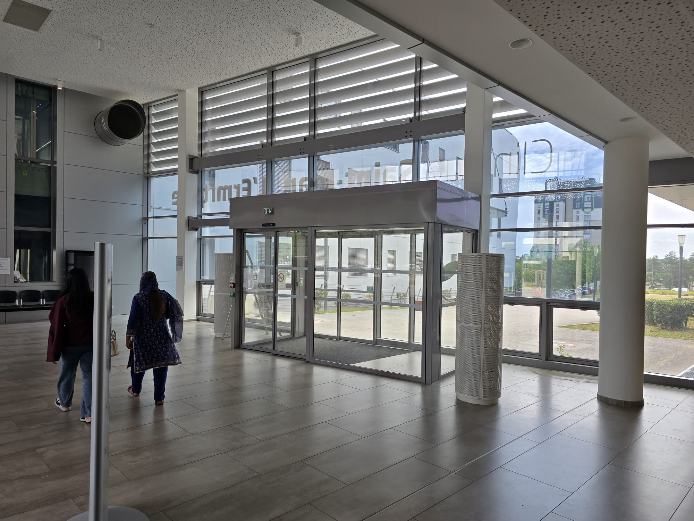

Film solaire au hall vitré de la Clinique Saint-Jean l'Ermitage.
Hall d'accueil toute hauteur entièrement vitré à Melun (Seine-et-Marne). Pose d'un film solaire Solar Screen (réf. 70 C) sur la façade du hall — réduire la surchauffe et l'éblouissement pour le confort des patients et du personnel, sans assombrir l'espace d'accueil. Chantier réalisé sur un site en activité.

Pose du film solaire sur le hall vitré toute hauteur — Clinique Saint-Jean l'Ermitage, Melun (77)
Le hall d'accueil vitré après traitement — luminosité conservée
Sas d'entrée et façade vitrée de la clinique · Melun (77)Le contexte
La Clinique Saint-Jean l'Ermitage, à Melun (Seine-et-Marne, 77), dispose d'un hall d'accueil toute hauteur entièrement vitré. Très lumineux et accueillant, cet espace présentait l'inconvénient classique des grandes façades vitrées : en été, l'accumulation de chaleur et l'éblouissement rendaient l'accueil inconfortable pour les patients en attente comme pour le personnel.
L'objectif : faire baisser la température et l'éblouissement du hall sans remplacer les vitrages, et surtout sans assombrir un espace d'accueil dont la luminosité fait toute la qualité.
La solution technique
Pose d'un film solaire Solar Screen (réf. 70 C), retenu pour sa forte transmission lumineuse : il rejette une part importante de l'énergie solaire et filtre les UV tout en laissant entrer la lumière naturelle — exactement ce qu'exige un hall d'établissement de santé.
- Confort thermique : moins de surchauffe dans la zone d'accueil et d'attente
- Anti-éblouissement : confort visuel à la banque d'accueil et pour les patients
- Filtration des UV : protection des personnes et du mobilier
- Lumière préservée : le hall reste clair et accueillant
L'intervention
La façade du hall, toute hauteur, a nécessité une pose depuis un échafaudage roulant, avec balisage de sécurité (barrières) pour isoler la zone de travail. Le chantier s'est déroulé sur un site en pleine activité : l'accueil des patients n'a pas été interrompu, la circulation vers les portes automatiques restant assurée pendant la pose.
Ce que ce chantier illustre
Les établissements de santé (cliniques, hôpitaux, cabinets) cumulent de grandes surfaces vitrées et une exigence forte de confort pour des publics fragiles. Le film solaire y apporte une réponse rapide, propre et économique : pas de gros œuvre, pas de fermeture, résultat immédiat. La même approche s'applique aux halls d'accueil, salles d'attente, chambres exposées et plateaux de consultation.
Établissement de santé, ERP, hall vitré ?
On traite vos grandes façades. Sans fermer.
Cliniques, hôpitaux, EHPAD, écoles, bâtiments publics : nous intervenons sur site en activité, hors gêne pour vos usagers. Diagnostic gratuit par téléphone, devis sous 48 h en Île-de-France.